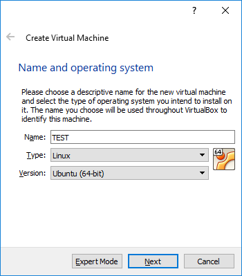
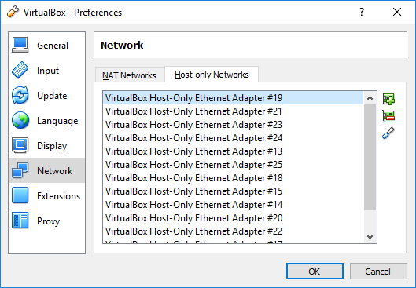
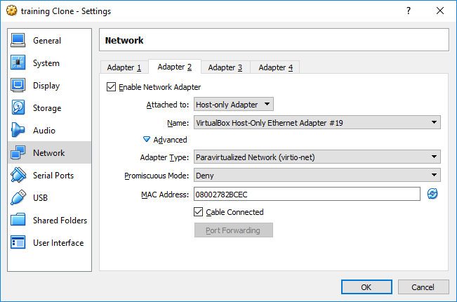

Download and install Oracle VirtualBox
We use VirtualBox because it's free and is supported on all platforms: windows, mac, linux.
Download your platform specific installer from Oracle and install VirtualBox.
Create a TEST VM:
Click "new" and follow the instructions in the image below. If
the "Ubuntu (64-bit)" option is not available to you then you do not
have hardware virtualization enabled. Most Intel CPU have this feature,
but it must be explicitly enabled in the BIOS. So reboot your computer
into BIOS and enable hw virtualization.
If you do get the "Ubuntu (64-bit)" option then click "Next" and take
the defaults for the rest, and click create to create your VM.

Create a Host-Only Network:
On the VirtualBox console, select File/Preferences. In the new dialog select "Network" and click the "Host-only Networks" tab:

Click on the "+" icon to create a new host-only network. Configure the network as follows:
- Adapter/IPv4 Address: 10.10.10.254 # This is the gateway address for the network
- Adapter/IPv4 Network Mask: 255.255.255.0
Click the "DHCP Server" tab and configure:
- Enable Server
- Server Address: 10.10.10.254 # Same as your default gateway
- Server Mask: 255.255.255.0 # Same as your network mask
- Lower Address Bound: 10.10.10.1
- Upper Address Bound: 10.10.10.253
Click OK to save your settings. Remember your host-only network name, to be used below.
Modify TEST VM to use the newly created host-only network
Select the TEST VM - right-click and choose "Settings..."
Select "Network"
You can either modify the "Adapter 1" and switch from "NAT" to
"host-only", or even better - add a new adapter, by enabling "Adapter
2" and configuring it as below:

I like using the "Paravirtualized Network" rather than true hw virtualization.
Click OK to save your changes to TEST VM.
Optionally, boot your VM
Your VM is ready to be turned on - however, there is nothing on its
boot disk - so in order to really use it you must boot with an ISO
image and go through installation. But you can skip this because in our
labs we use a golden-image, which is disk that's already configured to
be a working boot disk.
Delete your VM
If you powered on your VM then right-click and power it off using "Close/Power Off".
Now right-click and "Remove" your move. Select "Delete all files".